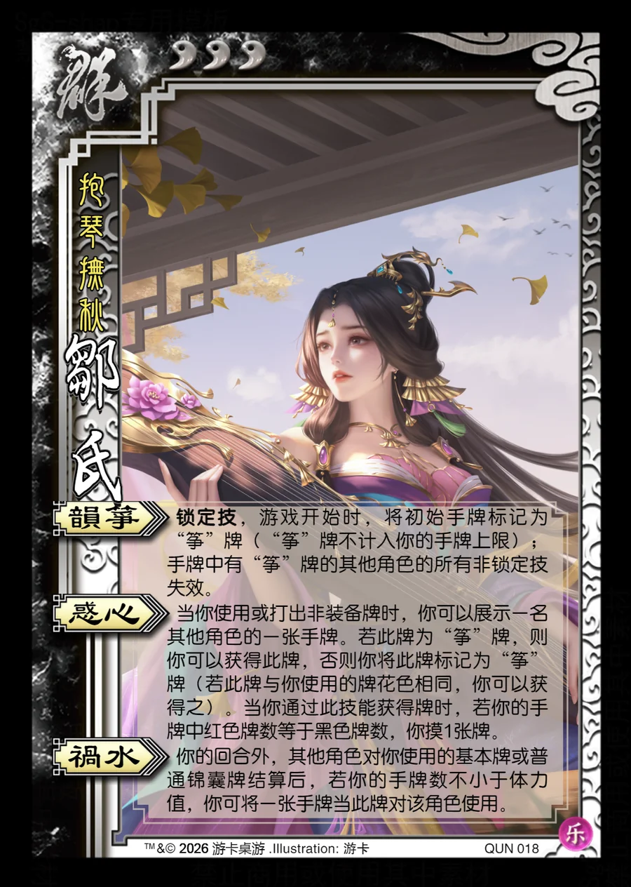

点击卡面查看大图
群
邹氏
♥3抱琴抚秋
韵筝锁定技
锁定技，游戏开始时，将初始手牌标记为“筝”牌（“筝”牌不计入你的手牌上限）；手牌中有“筝”牌的其他角色的所有非锁定技失效。
惑心
当你使用或打出非装备牌时，你可以展示一名其他角色的一张手牌。若此牌为“筝”牌，则你可以获得此牌，否则你将此牌标记为“筝”牌（若此牌与你使用的牌花色相同，你可以获得之）。当你通过此技能获得牌时，若你的手牌中红色牌数等于黑色牌数，你摸1张牌。
祸水
你的回合外，其他角色对你使用的基本牌或普通锦囊牌结算后，若你的手牌数不小于体力值，你可将一张手牌当此牌对该角色使用。